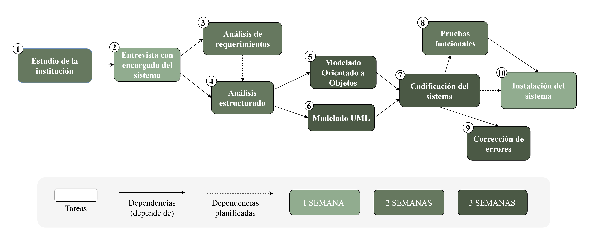
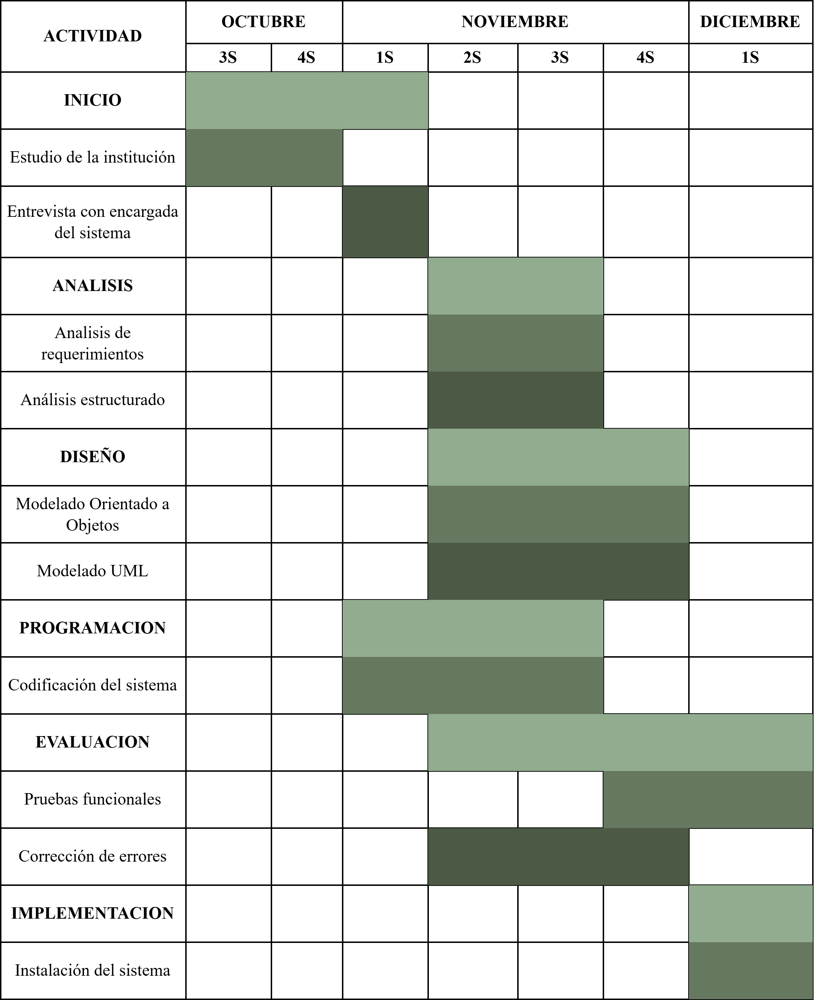

I. MARCO TEÓRICO
1. INTRODUCCIÓN
El Instituto Simón Bolívar, institución educativa fundada en 1989 con presencia en cinco departamentos del país (Santa Cruz, El Alto, La Paz, Tarija y Oruro), ha implementado progresivamente sistemas de información para la gestión de sus procesos académicos y administrativos.
Sin embargo, la constante evolución de las normativas educativas y las crecientes demandas del entorno educativo contemporáneo han generado la necesidad de realizar un análisis exhaustivo y rediseño de su sistema de gestión académica.
Este estudio se enfoca en evaluar la eficiencia del sistema actual, identificando sus fortalezas y debilidades, con el objetivo de proponer un rediseño que optimice los procesos institucionales, mejore la experiencia de usuarios (estudiantes, docentes y personal administrativo) y garantice la adaptabilidad del sistema a los cambios normativos futuros.
2. ANTECEDENTES
El Instituto Simón Bolívar se constituye como una institución de educación técnica superior con 34 años de trayectoria ininterrumpida en la formación profesional. Fundado en 1989, ha expandido su cobertura a cinco departamentos estratégicos, posicionándose como un referente en educación técnica especializada.
2.1. Estructura Organizacional Centralizada
- Rectoría: Máxima autoridad académica y administrativa.
- Dirección Académica: Gestión de programas educativos, planificación curricular y supervisión docente.
- Dirección Administrativa: Administración de recursos, infraestructura y servicios generales.
- Personal Especializado: Cuerpo docente calificado y personal administrativo de apoyo.
2.2 Evolución Tecnológica y Situación Actual
- Implementación inicial de sistemas web para gestión académica.
- Desarrollo progresivo de módulos específicos e integración con facturador y firma electrónica.
- Plataforma web operativa con base de datos, con cobertura de procesos académicos y administrativos.
- Módulo de encuestas estudiantiles implementado y sistema de gestión de calificaciones y pagos funcional.
- Procesos de titulación en fase de desarrollo o no completamente integrados.
3. PLANTEAMIENTO DEL PROBLEMA
El sistema académico administrativo del Instituto Simón Bolívar enfrenta el desafío de la adaptación continua debido a los frecuentes cambios en las normativas educativas nacionales y las necesidades institucionales emergentes. Esta situación genera limitaciones por su falta de automatización completa, baja integración y la necesidad constante de modificaciones.
Esta situación genera, entre otros, los siguientes desafíos:
- Modificaciones constantes en la estructura del sistema.
- Demandas de desarrollo continuo para nuevos requisitos.
- Limitaciones en la gestión completa del personal docente.
- Procesos de titulación aún no completamente integrados.
4. ÁRBOL DE PROBLEMAS
5. FORMULACIÓN DEL PROBLEMA
Pregunta de Investigación: ¿Cómo diseñar un sistema de gestión académica adaptable y escalable para el Instituto Simón Bolívar que responda eficientemente a los cambios normativos del sector educativo, optimice los procesos institucionales y reduzca los costos de mantenimiento, considerando las particularidades de sus cinco sedes distribuidas a nivel nacional?
6. PROPÓSITO DEL ESTUDIO (Objetivos)
Objetivo General:
Diseñar un sistema rediseñado de gestión académica para el Instituto Simón Bolívar que mejore la adaptabilidad a cambios normativos, optimice los procesos académico administrativos y reduzca los costos de mantenimiento, mediante la aplicación de metodologías estructuradas de análisis y diseño de sistemas.
6.1. OBJETIVOS ESPECÍFICOS:
- Análisis del Sistema Actual mediante Modelado Ambiental
- Realizar el modelo ambiental del sistema actual bajo el paradigma de análisis estructurado.
- Elaborar el Diagrama de Contexto (DC) identificando entidades externas y flujos de datos.
- Desarrollar el Diagrama de Flujo de Datos (DFD) nivel 0 para comprender los procesos principales.
- Diagnóstico de Puntos Críticos mediante Diagramas Estructurales
- Aplicar tipos de relación (asociación, agregación, composición, herencia) para modelar dependencias.
- Diseñar diagramas de clases que evidencien los puntos de rigidez estructural.
- Diseño de Arquitectura Modular mediante Modelado Jerárquico
- Desarrollar DFD nivel 1, 2 y 3 para diseñar la descomposición modular de procesos.
- Diseñar almacenes de datos (Modelo 2) con redundancia controlada.
- Propuesta de Modelo de Datos Flexible mediante Normalización
- Diseñar diagrama entidad-relación aplicando cardinalidades específicas (1:1, 1:N, N:M).
- Aplicar principios de herencia para gestionar tipos de usuarios (estudiantes, docentes, administrativos).
- Plan de Implementación Gradual mediante Enfoque por Fases
- Elaborar diagrama de Gantt con dependencias críticas entre actividades.
- Definir métricas de calidad ISO para aceptación de cada módulo implementado.
7. MÉTODOS DE INVESTIGACIÓN (Metodología)
7.1. Enfoque Metodológico
Se empleó un enfoque mixto de investigación, combinando métodos cualitativos y cuantitativos para obtener una visión integral del sistema actual. El estudio se desarrolló bajo el paradigma de análisis estructurado, utilizando técnicas estandarizadas de ingeniería de software.
7.2. Técnicas e Instrumentos de Recolección de Datos
| Técnica | Instrumento | Aplicación |
|---|---|---|
| Encuesta semiestructurada | Cuestionario aplicado a secretaria de Dirección Académica | Recoger información detallada sobre procesos académicos y necesidades específicas del área. |
| Investigación documental / Análisis de contenido | Revisión de página web institucional y normativas internas / Extracción de datos de fuentes digitales | Recopilar información oficial sobre estructura, servicios y procedimientos académicos. Sistematizar información disponible en plataformas institucionales. |
7.3. Limitaciones
- Acceso restringido a información confidencial del sistema académico.
- Tiempo limitado para profundizar en todos los procesos institucionales.
- Dependencia de una sola fuente clave (secretaria de Dirección Académica) para información detallada.
- Imposibilidad de realizar pruebas técnicas directas en el sistema operativo actual.
8. PLANIFICACIÓN DE ACTIVIDADES
Diagrama de Gantt
Diagrama de Pert
| Fase | Actividad Clave |
|---|---|
| INICIO | Estudio de la institución, Entrevista con encargada del sistema. |
| ANÁLISIS | Análisis de requerimientos, Análisis estructurado. |
| DISEÑO | Modelado Orientado a Objetos, Modelado UML. |
| PROGRAMACIÓN | Codificación del sistema. |
| EVALUACIÓN | Pruebas funcionales, Corrección de errores. |
| IMPLEMENTACIÓN | Instalación del sistema. |